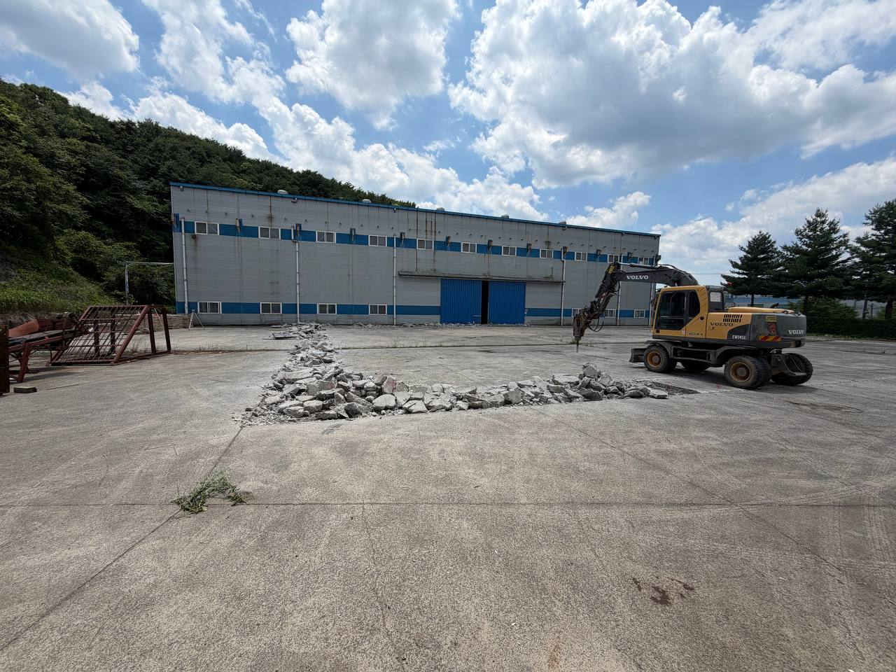
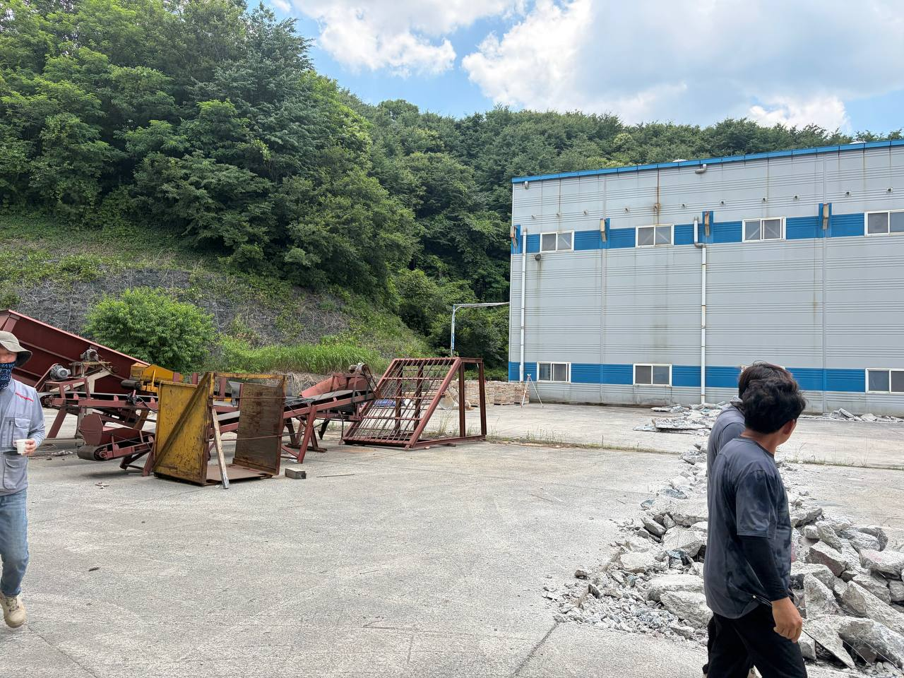
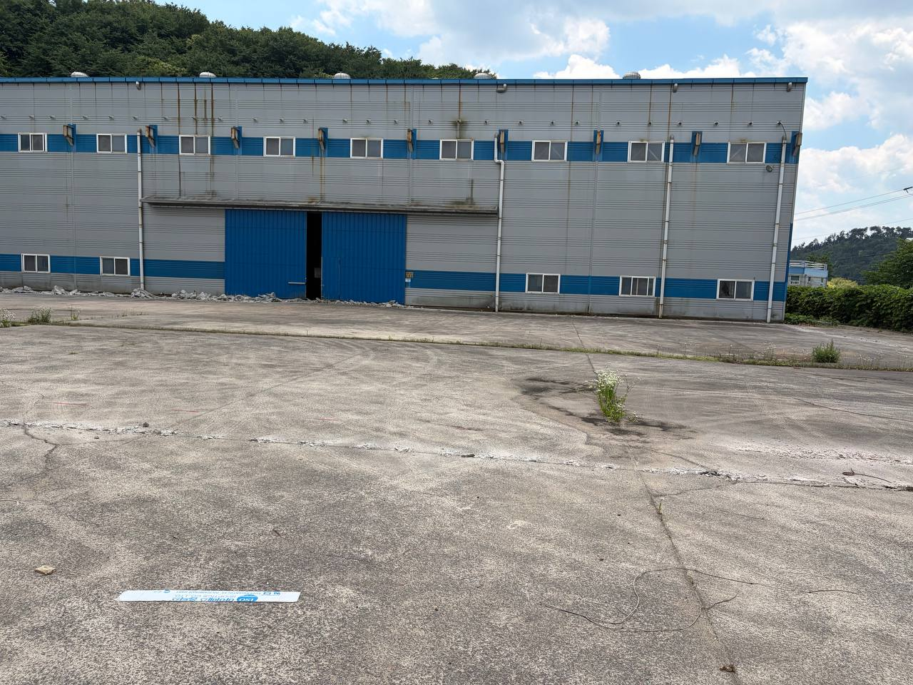
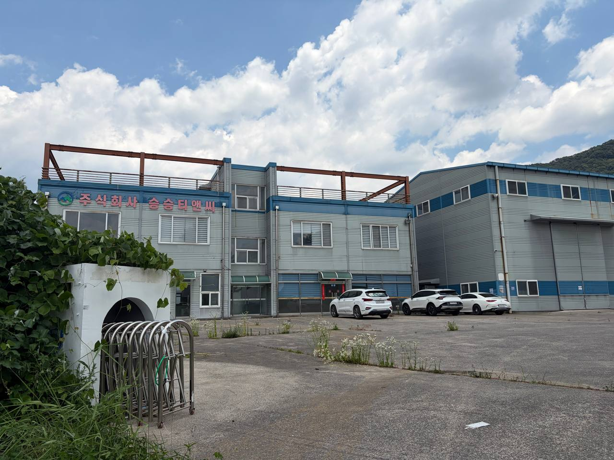
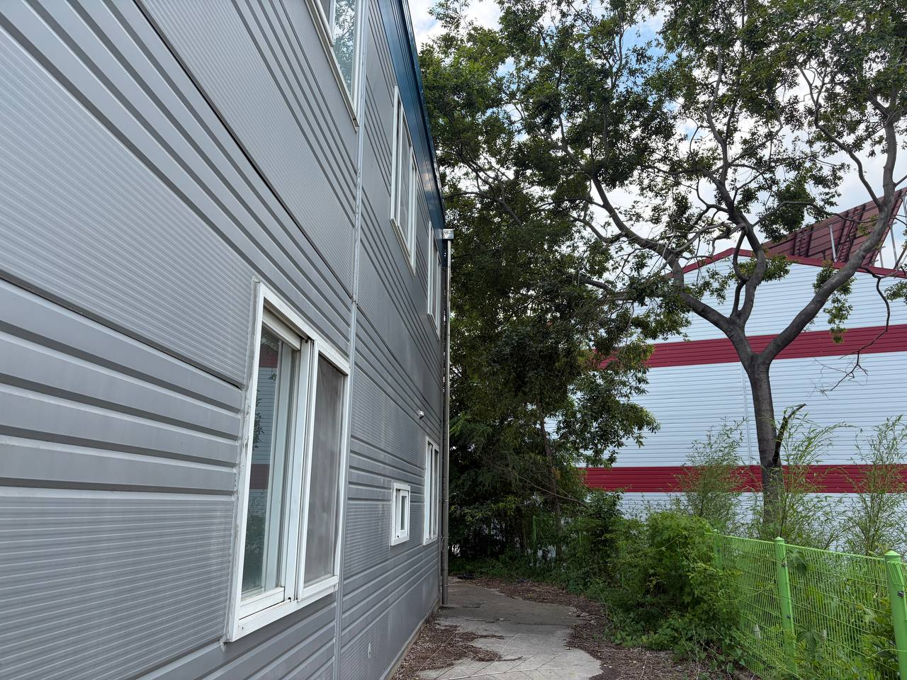
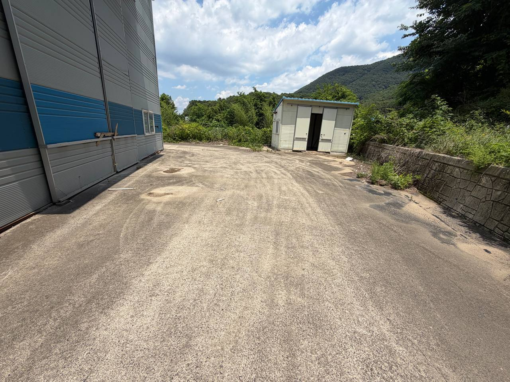
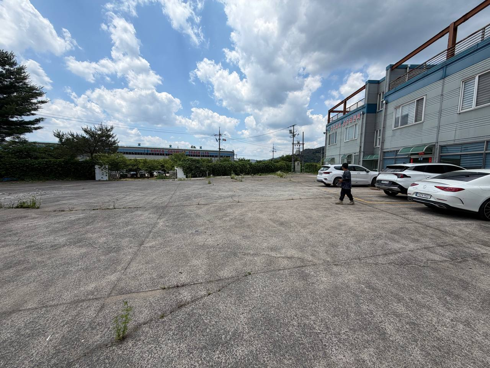
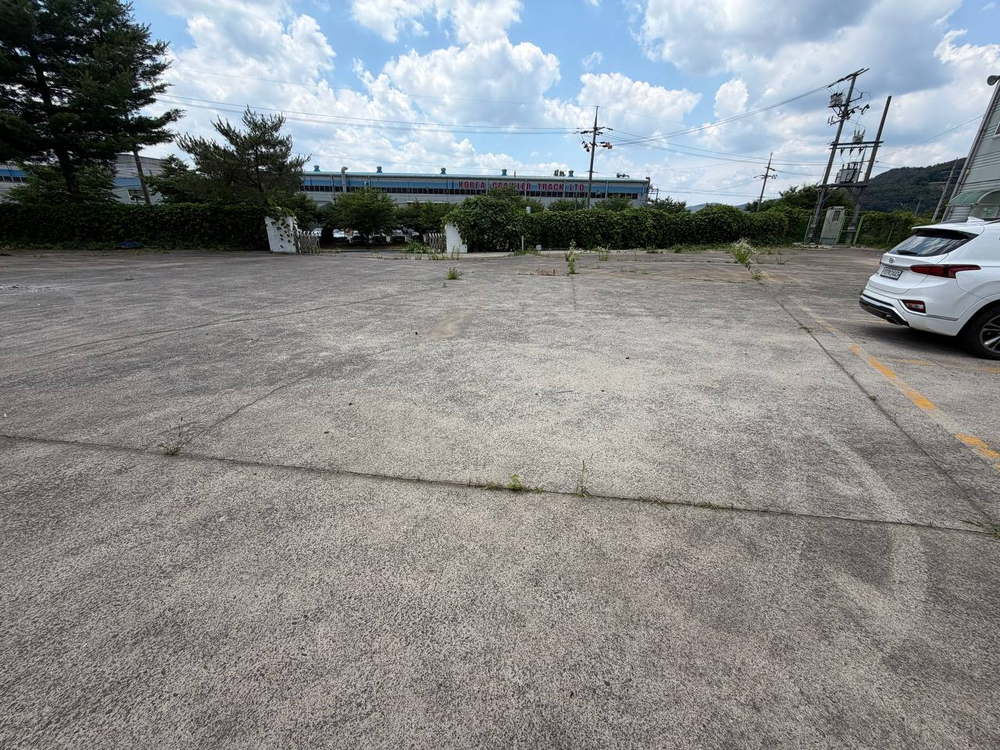

현장 사진에서 브레이커 장비를 활용한 기존 콘크리트 포장 파쇄가 확인된다. 이는 옹벽 기초공사 착수 전 선행 철거가 진행 중이라는 직접 증거다.
공사 착수는 확인됐고, 이제 관리는 증빙과 선행 리스크로 이동한다
2026년 6월 11일 현장 기록의 핵심은 공장 전면 야드에서 기존 콘크리트 바닥을 브레이커로 파쇄하며 옹벽 기초공사 착공을 확인했다는 점이다. 이 착공은 6월 초 인허가 제출과 부대공사 선행 착수 흐름의 현장 실행 증거로 볼 수 있다.
동시에 이 기록은 후속 공정의 리스크 목록을 분명하게 남긴다. 건축물대장에 없는 외곽 창고는 준공검사 리스크 제거 차원에서 철거 대상으로 정리됐고, 기숙사·사무동의 물홈통 막힘과 옥상 침수 가능성은 장마 전 방수·배수 정비 과제로 전환됐다. 정문 게이트·펜스와 계근대 설치 후보지는 물류 동선과 시공 일정의 접점으로 별도 협의가 필요하다.
첫날의 공사일보가 중요한 이유는 “무엇을 시작했는가”보다 “무엇을 다음 병목으로 남겼는가”를 보여주기 때문이다.
핵심 발견 네 가지
건축물대장에 없는 외곽 창고는 공사 품질 이슈가 아니라 인허가·준공검사 리스크로 분류해야 한다. 철거 전후 사진과 폐기물 처리기록 보관이 핵심이다.
기숙사·사무동 외곽 물홈통 막힘은 옥상 침수, 누수, 곰팡이로 이어질 수 있다. 부대공사와 별개로 우선순위를 올릴 필요가 있다.
정문 진입부, 대형차 정차·회차, 전기·통신 인입 가능성은 단순 설치 위치가 아니라 향후 운영 동선의 품질을 좌우한다.
현장 증거를 기준으로 본 공정 상태
| 구분 | 관찰 내용 | 상태 | 관리 판단 |
|---|---|---|---|
| 착공·철거 | 브레이커로 기존 바닥 콘크리트 파쇄, 파쇄물 집적 확인 | 진행 | 철거 범위, 반출량, 임시적치 위치를 일일 단위로 남긴다. |
| 옹벽 기초 | 옹벽 기초 예정선 주변의 바닥 철거 진행 | 착수 | 기준선, 레벨, 배수 간섭, 기존 설비 간섭을 확인한다. |
| 무허가 창고 | 건축물대장에 없는 외곽 창고 확인 및 철거 지시 | 중요 | 준공검사 대응자료로 철거 전후 사진과 폐기물 처리기록을 보관한다. |
| 방수·배수 | 기숙사·사무동 외곽 물홈통 막힘, 옥상 침수 가능성 확인 | 주의 | 장마 전 물홈통 청소와 방수공사 범위를 확정한다. |
| 게이트·펜스 | 정문 게이트 및 기존 펜스 주변 수목·덩굴 정리 필요 | 검토 | 6월 중순 이후 시공 일정과 차량 통제 계획을 맞춘다. |
| 계근대 | 정문~사무동 전면 포장 야드에서 설치 후보지 확인 | 검토 | 대형차 진입·정차·회차, 전기·통신 인입, 바닥 보강을 업체와 확인한다. |
6월 11일 현장 의사결정 지도
Center
6/11 현장 확인
바닥 철거, 옹벽 기초공사 착공, 외곽 리스크를 같은 방문에서 확인했다.
Work
철거·기초
콘크리트 파쇄와 파쇄물 집적은 옹벽 기초공사의 선행 단계다.
Risk
준공검사 리스크
무허가 창고는 철거와 증빙 보관을 통해 리스크를 제거해야 한다.
Rainy Season
방수·배수
물홈통 막힘과 옥상 침수 가능성은 장마 전 조치가 필요한 선행 리스크다.
Access
게이트·펜스
수목 정리와 시공 일정 확인은 외곽 공사의 착수 조건이다.
Logistics
계근대 후보지
위치 선정은 대형차 동선, 대기공간, 전기·통신 인입과 함께 판단해야 한다.
계획 대비 실행 흐름
| 영역 | 일정 기준 | 2026-06-11 판단 | 다음 확인점 |
|---|---|---|---|
| 인허가 | 2026-06-05 진주시청 제출 | 착공계는 건축허가승인 후 신청 흐름으로 관리 | 보완요청 여부, 허가 승인 예상일 |
| 부대공사 | 2026-06-08 이후 선행 착수 | 6/11 현장 철거 작업으로 실행 증거 확보 | 6/30까지 주요 부대공사 완료 가능성 |
| 옹벽·기초 | 6월 중 기초공사 연계 | 기존 포장 철거 단계 확인 | 기준선, 레벨, 배수 간섭 |
| 방수 보완 | 장마 전 선행 필요 | 물홈통 막힘과 옥상 침수 가능성 확인 | 청소, 방수 범위, 견적 |
| 게이트·펜스 | 6/17 착수, 7/15 완료 흐름 | 정문·펜스 예정구간 사전 정리 필요 | 수목 제거 일정, 차량 통제 계획 |
| 증축구간 | 8월 중순~하순 완료 목표 | 부대공사와 후속 설비 반입 일정의 접점 관리 필요 | 후속업체 일정, 자재 반입 동선 |
사진별 공사일보 기록

P01. 바닥 콘크리트 철거 착수
공장 전면 야드의 옹벽 기초 예정선 주변에서 기존 콘크리트 포장을 파쇄하고 있다. 파쇄물 비산, 장비 반경 통제, 반출 동선 지정이 필요하다.

P02. 작업구간 현장협의
기존 철구조물과 선별설비 주변에서 작업자 현장 확인이 이루어졌다. 설비 간섭과 보행·차량 위험을 동시에 관리해야 한다.

P03. 공장 출입구 전면 상태
대형 출입문 전면의 자재 반입·장비 진입 동선을 확인했다. 차량 동선과 작업구간을 분리하고 파쇄물 정리가 필요하다.

P04. 전면 야드 전체 기준사진
공장동 전면과 야드 전체를 남긴 기준사진이다. 공사 전후 비교, 외벽 보호, 출입문 주변 정리에 활용할 수 있다.

P05. 정문·게이트·펜스 예정구간
정문 진입부, 주차공간, 외곽 수목 상태를 확인했다. 게이트 시공 전 풀·덩굴·나무 제거와 차량 통제 계획이 필요하다.

P06. 공장동 사이 작업동선
양측 공장동 사이 통행공간과 장비 이동반경을 확인했다. 철거폐기물 임시적치 위치와 차량 통행로를 분리해야 한다.

P07. 기숙사·사무동 외곽 배수/방수
외벽 배수관, 물홈통, 낙엽·수목 밀집 구간이 확인됐다. 장마 전 청소와 방수 보완을 선행해야 한다.

P08. 무허가 창고 철거 대상
건축물대장에 없는 외곽 창고가 확인됐다. 준공검사 리스크 제거를 위해 철거 전후 사진과 처리기록을 별도 보관해야 한다.

P09. 계근대 후보지 1차 검토
대형차 진입·정차·회차가 가능한 포장 야드를 확인했다. 계근대 설치업체 미팅을 통해 바닥 보강과 전기·통신 인입을 검토해야 한다.

P10. 정문 방향 계근·게이트 동선
정문 방향 시야, 차량 진입공간, 전기설비 인접성을 확인했다. 게이트 거리와 대기공간 부족 가능성을 함께 검토해야 한다.
후속 액션 체크리스트
공정관리
- 철거 범위와 잔재 반출량 기록
- 옹벽 기초 기준선·레벨 확인
- 작업반경 출입통제 표지 설치
- 파쇄물 임시적치 및 반출동선 지정
준공·인허가 리스크
- 무허가 창고 내부 잔존물 확인
- 무허가 창고 철거 전 사진 보관
- 철거 후 사진 및 폐기물 처리기록 보관
- 준공검사 대응자료로 별도 편철
방수·배수
- 기숙사·사무동 물홈통 막힘 확인
- 낙엽·수목·이물질 제거
- 옥상 침수 가능 구간 점검
- 방수공사 범위와 견적 확인
계근대·게이트
- 계근대 설치업체 현장 미팅 일정 확정
- 대형차 진입·정차·회차 동선 검토
- 전기·통신 인입 가능 여부 확인
- 정문게이트·펜스 주변 수목 제거 일정 확인
출처와 판독 기준
주요 출처: 2026-06-11 현장 사진 10장, 사용자 현장 설명 및 지시사항, 2026-06-05 주간보고, 2026-06-05 프로젝트관리표 통합노트, 2026-06-08 증축공사 Kick-off 미팅 기록.
판독 기준: 사진 기반 현장 판독과 현장 지시사항을 결합했다. 수량, 치수, 정확 위치, 철거 범위, 계근대 기초 사양은 추후 현장도면 및 시공사 확인이 필요하다.
관리번호: JISOO-DAILY-2026-06-11-001 · 문서 상태: 정리완료 · 검토 우선순위: High
사용자 현장 설명 및 지시사항 원문 요약:
- 이번주 일정에 공사착공이 있고, 오늘 현장을 방문함.
- 오늘 공장바닥 콘크리트 철거 및 옹벽 기초공사 착공 모습.
- 브레이커로 바닥 콘크리트를 제거 중.
- 건축물대장에 없는 부지 외곽 무허가 창고 철거 지시.
- 목적: 추후 준공검사 시 리스크 제거.
- 기숙사 및 사무동 외곽 물홈통 막힘에 따른 건물옥상 침수 방지 및 방수공사 지시.
- 정문게이트 및 펜스공사 전 기존 펜스구간 풀·나무·덩굴 제거와 시공일정 확인 필요.
- 계근대 설치 후보 위치 확인 및 설치업체 미팅 의뢰 필요.
첫날의 결론
2026년 6월 11일의 가장 큰 의미는 공사가 눈에 보이는 방식으로 시작됐다는 점이다. 그러나 이 기록의 실무적 가치는 착공 확인에 머물지 않는다. 철거 잔재, 기준선, 방수, 무허가 창고, 게이트, 계근대는 모두 뒤로 미루면 일정과 준공검사에 영향을 줄 수 있는 항목이다.
따라서 다음 공사일보의 초점은 “얼마나 진행됐는가”와 함께 “증빙이 남았는가, 장마 전 조치가 끝났는가, 후속업체가 들어올 조건이 만들어졌는가”가 되어야 한다.
Copy-ready takeaway: 착공은 확인됐다. 이제 관리는 철거 증빙, 준공 리스크 제거, 장마 전 방수·배수, 물류 동선 확정으로 이동한다.